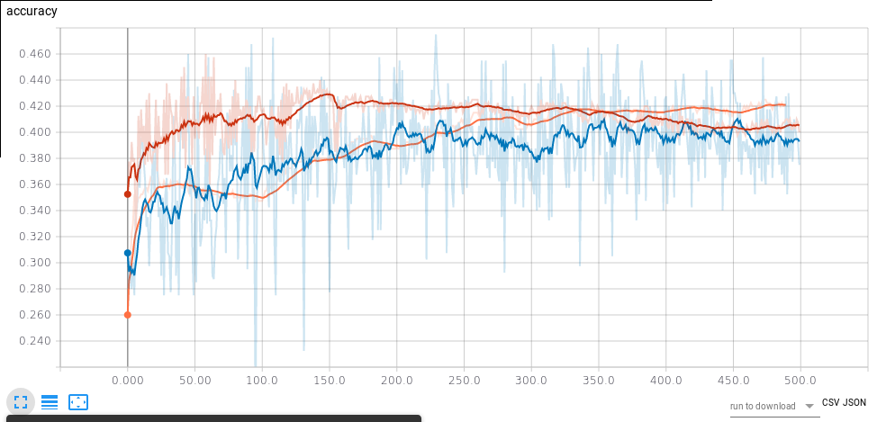

 Dieta Paleo, schema settimanale
Dieta Paleo, schema settimanale
Vi proponiamo un menù settimanale della dieta Paleo esclusivamente a titolo esemplificativo. Se volete perdere peso o imparare a mantenervi in salute tramite una corretta alimentazione vi consigliamo come sempre di rivolgervi ad un esperto.
Lunedì
Colazione: uova sode e mandorle
Pranzo: bresaola e rucola
Cena: salmone con verdure di stagione
Martedì
Colazione: salmone e noci
Pranzo: petto di pollo ai ferri con insalata
Cena: spezzatino con verdure crude
Mercoledì
Colazione: fesa di tacchino e noci
Pranzo: insalata di gamberi e rucola
Cena: pesce alla griglia con verdure di stagione
Giovedì
Colazione: prosciutto crudo e macedonia
Pranzo: omelette con insalata e pomodori
Cena: pollo arrosto con verdure grigliate
Venerdì
Colazione: uova e noci
Pranzo: fettina con funghi
Cena: zuppa di verdure con affettato a scelta
Sabato
Colazione: uova e frutta
Pranzo: insalatona di verdure miste con affettati
Cena: scaloppine con verdure
Domenica
Colazione: frullato di frutta con latte di cocco o bevanda vegetale ricavata da frutta secca
Pranzo: pollo al curry con insalata
Cena: salmone con verdure grigliate
Non sono previsti spuntini ma se si avverte fame è possibile mangiare frutta secca o affettati.